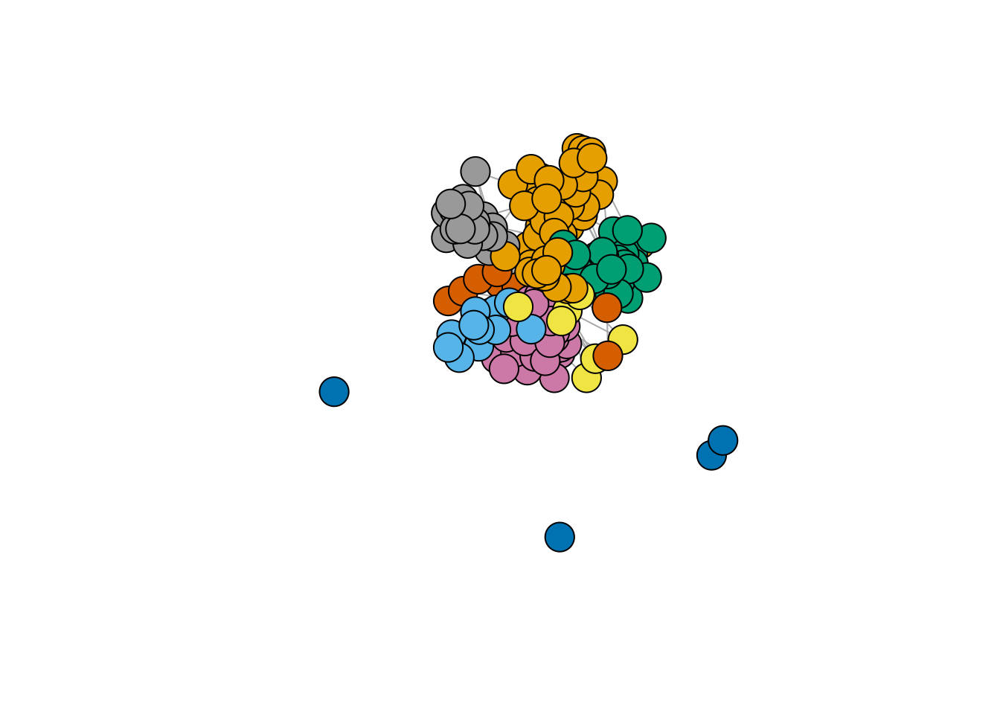
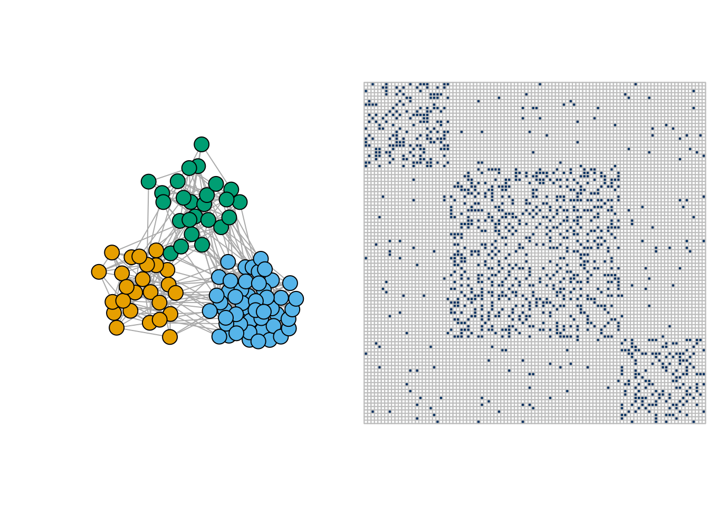
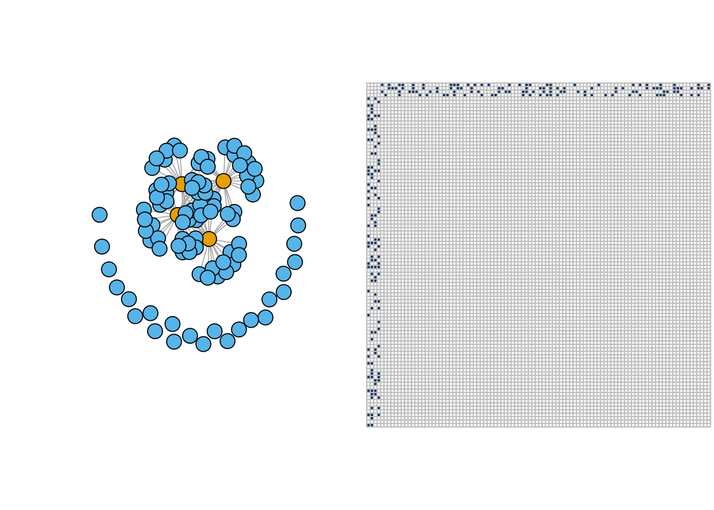
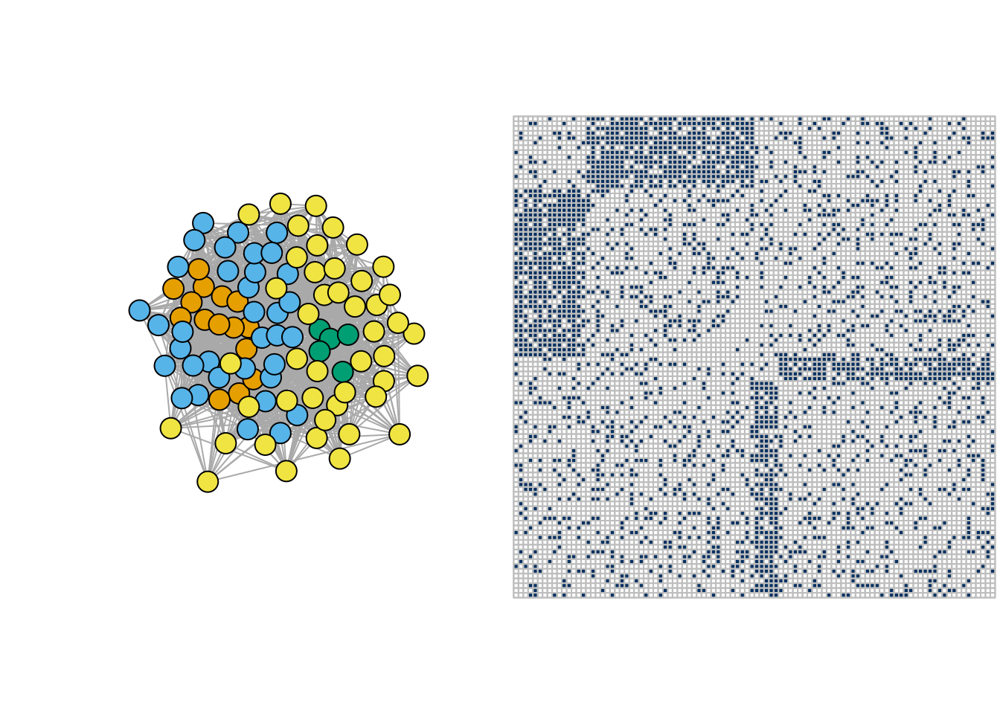
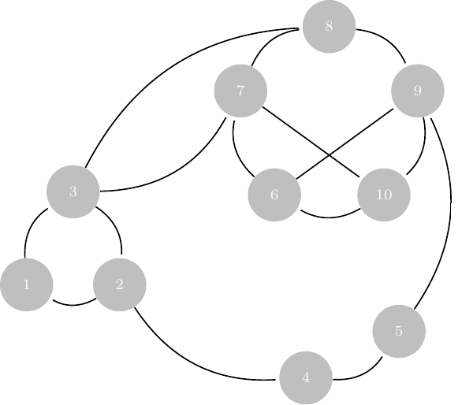
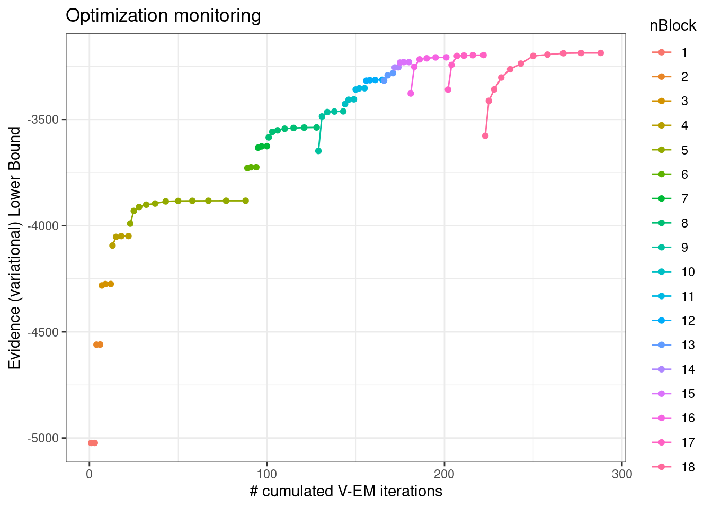
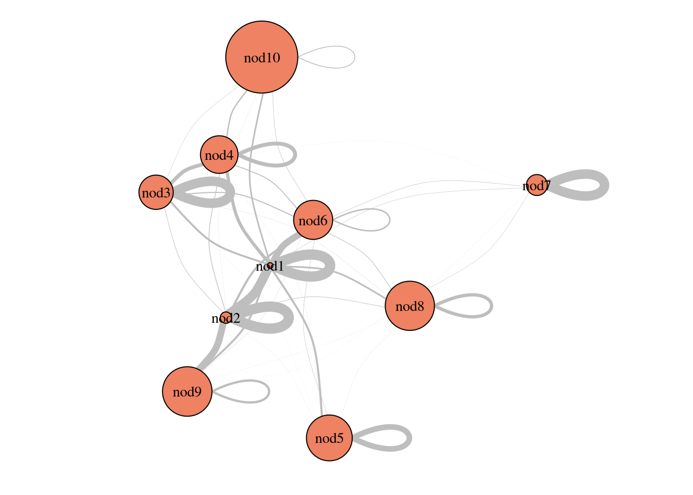
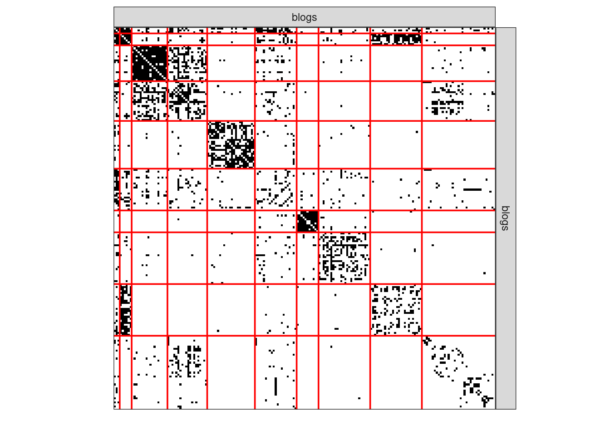

library(tidyverse)
library(corrplot)
library(viridis)
library(igraph)
library(aricode)
library(missSBM)
library(sbm)
theme_set(theme_bw())Stochastic block Models
Lecture Notes
Preliminary
Functions from R-base and stats (preloaded) are required plus packages from the tidyverse for data representation and manipulation. The package igraph is a great library for network data manipulation (interface exists in Python). We will also use the package aricode for computing clustering metrics. sbm and missSBM are used to adjust stochastic blockmodels.
options(tinytex.engine = 'xelatex')1 Introduction: the French political Blogosphere
We continue our example on the French political blogosphere
The frenchblog2007 data is a network dataset which consists of a single day snapshot of over 200 political blogs automatically extracted the 14 October 2006 and manually classified by the “Observatoire Présidentielle” project. It is part of the missSBM package. It is provided as an igraph object with 196 nodes. The vertex attribute “party” provides a classification of the nodes.
Show the code
data("frenchblog2007")
summary(frenchblog2007)IGRAPH 7b93b75 UN-- 196 1432 --
+ attr: name (v/c), party (v/c)Show the code
igraph::V(frenchblog2007)$party %>% table() %>% as_tibble() %>% rmarkdown::paged_table()Show the code
blog <- frenchblog2007 %>% delete_vertices(which(degree(frenchblog2007) <= 1))
party <- V(blog)$party %>% as_factor()
Y <- blog %>% as_adjacency_matrix()
n_nodes <- gorder(blog)
n_edges <- gsize(blog)
party %>% table() %>% as_tibble() %>% rmarkdown::paged_table()Show the code
plot.igraph(frenchblog2007,
vertex.color = factor(V(frenchblog2007)$party),
vertex.label = NA
)
2 Model-based clustering for graph data
Motivation
We are still looking for an underlying organization in a observed network, yet with model-based approaches, so that statistical inference would be possible.
This session essentially aims to present the stochastic block model, a random graph model tailored for clustering vertices. As will be seen, this model is can be interpreted as a special mixture model for graph data. Hence, the relationship between spectral clustering for network and the Stochastic block model is the same as the one between the k-means clustering and Gaussian mixture models.
Recall that the connectivity of a binary undirected (symmetric) graph \mathcal{G} = (\mathcal{V},\mathcal{E}) is captured by the |\mathcal{V}|\times |\mathcal{V}| matrix Y, called the adjacency matrix (Y)_{ij} = \begin{cases} 1 & \text{ if } i \sim j,\\ 0 & \text{otherwise}. \end{cases} For a valued of weighted graph, a similar definition would be
(Y)_{ij} = \begin{cases} w_{ij} & \text{ if } i \sim j,\\ 0 & \text{otherwise}. \end{cases} where w_{ij} is the weight associated with edge i\sim j.
2.1 The Erdös-Renyi model
We start by the most simple, yet natural model for random graph, the Erdös-Rényi model.
Definition 1 (Erdös-Rényi model) Let \mathcal{V} = {1,\dots,n} be a set of fixed vertices. The (simple) Erdös-Rényi model \mathcal{G}(n,\pi) assumes random edges between pairs of nodes with probability \pi. In orther word, the (random) adjacency matrix Y is such that
Y_{ij} \sim \mathcal{B}(\pi)
A direct consequence is that the distribution of the (random) degree D_i of a vertex i follows a binomial distribution, i.e.,
D_i \sim b(n -1, \pi).
G1 <- igraph::sample_gnp(10, 0.1)
G2 <- igraph::sample_gnp(10, 0.9)
G3 <- igraph::sample_gnp(100, .02)
par(mfrow=c(1,3))
plot(G1, vertex.label=NA) ; plot(G2, vertex.label=NA)
plot(G3, vertex.label=NA, layout=layout.circle)Because of its simplicity, a lot of mathematical derivation can be done with this model, yet its utility for adjusting real-world network is very limited since
- the degree distribution is too concentrated, with no high degree nodes,
- All nodes are equivalent,
- No modularity is observed.
For instance, for the graph G3 sampled above, the empirical degree distribution and and basic clustering support the over homogeneous structure of the ER model.

2.2 The Stochastic Block Model (SBM)
The SBM generalizes the Erdös-Rényi model in a mixture framework (see Nowicki and Snijders (2001), Daudin, Picard, and Robin (2008)). It provides
- a statistical framework to adjust and interpret the parameters
- a flexible yet simple specification that fits many existing network data
Stochastic Block Model: definition
Let
- \{1, \dots, n \} be some fixed nodes,
- with some unknown colors picked up from \mathcal{C}=\{{\color{#fab20a}{\bullet}},{\color{#0000ff}{\bullet}},{\color{#008000}{\bullet}}\}
Denote by
- \alpha_\bullet = \mathbb{P}(i \in \bullet), \bullet\in\mathcal{C} the prior probability of group memberships,
- \pi_{{\color{#fab20a}{\bullet}}{\color{#0000ff}{\bullet}}} = \mathbb{P}(i \leftrightarrow j | i\in{\color{#fab20a}{\bullet}},j\in{\color{#0000ff}{\bullet}}), the probability of connection between groups.
In the binary Stochastic Block Model, the adjacency matrix Y_{ij} is random, with probability of connection between a dyad (i,j) being defined conditionally on their respective group memberships, described by a vector of random variables (Z_i)_{i=1,\dots,n}.
\begin{aligned} Z_i = \mathbf{1}_{\{i \in \bullet\}} \ & \sim^{\text{iid}} \mathcal{M}(1,\alpha), \\ Y_{ij} \ | \ \{i\in{\color{#fab20a}{\bullet}},j\in{\color{#0000ff}{\bullet}}\} & \sim^{\text{ind}} \mathcal{B}(\pi_{{\color{#fab20a}{\bullet}}{\color{#0000ff}{\bullet}}})\\ \end{aligned}

2.2.1 A generative model
The SBM does not assume assume any particular a priori structure of the network: because it is a probabilistic, generative model, we can easy simulate SBM-based network data with various topologies Here are a few examples:
- Community network
pi <- matrix(c(0.3,0.02,0.02,0.02,0.3,0.02,0.02,0.02,0.3),3,3)
communities <- igraph::sample_sbm(100, pi, c(25, 50, 25))
par(mfrow = c(1,2))
plot(communities, vertex.label=NA, vertex.color = rep(1:3,c(25, 50, 25)))
corrplot(as_adj(communities, sparse =FALSE), tl.pos = "n", cl.pos = 'n')
- Star network
pi <- matrix(c(0.05,0.3,0.3,0),2,2)
star <- igraph::sample_sbm(100, pi, c(4, 96))
par(mfrow = c(1,2))
plot(star, vertex.label=NA, vertex.color = rep(1:2,c(4,96)))
corrplot(as_adj(star, sparse =FALSE), tl.pos = "n", cl.pos = 'n')
- Bipartite network
pi <- matrix(c(.2,1-.2,.2,.2,1-.2,.2,.2,.2,.2,.2, .2,1-.2,.2,.2,1-.2,.2),4,4)
bipar <- igraph::sample_sbm(100, pi, c(15, 35, 5, 45))
par(mfrow = c(1,2))
plot(bipar, vertex.label=NA, vertex.color = rep(1:4,c(15, 35, 5, 45)))
corrplot(as_adj(bipar, sparse =FALSE), tl.pos = "n", cl.pos = 'n')
2.2.2 Degree distribution
Because it is defined as a simple mixture of Erdös-Rényi, the degree distribution of the binary SBM has a simple close form
Definition 2 (SBM: Degree distribution) The conditional degree distribution of a node i\in q is
D_i | i \in q \sim \mathrm{b}(n-1,\bar\pi) \approx \mathcal{P}(\lambda_q), \qquad \bar\pi_q = \sum_{\ell=1}^Q \alpha_\ell \pi_{q\ell}, \quad \lambda_q = (n-1)\bar\pi_q
From this, we deduce the degree distribution of a node i, which can be approximated by a mixture of Poisson distributions:
\mathbb{P}(D_i = k) = \sum_{q=1}^Q\alpha_q \exp(-\lambda_q) \ \frac{\lambda_q^k}{k !}
3 Estimation: Variational Inference of the binary SBM
3.1 SBM: a latent variable model
Recall tha we have fixed nodes \{1, \dots, n \} with hidden colors \mathcal{C}=\{\color{#fab20a}{\bullet},\color{#0000ff}{\bullet},\color{#008000}{\bullet}\}. We observe the following

We need to estimate the model parameters and the clustering:
- \theta = \{\boldsymbol\alpha = (\alpha_\bullet), \boldsymbol\Pi = (\pi_{\color{#fab20a}{\bullet}\color{#0000ff}{\bullet}})\}
- Colors of i, i.e. the \mathbf{Z}_i (the clustering)
Just like with Gaussian mixture models, maximizing the marginal log likelihood is not straightforward
\ell_\theta(\mathbf{Y}_i) = \log p_\theta(\mathbf{Y}_i) = \log \int_{\mathcal{Z}} \prod_{(i,j)} p_\theta(Y_{ij} | Z_i, Z_j ) \, p_\theta(\mathbf{Z}) \mathrm{d}\mathbf{Z}
Integration over \mathcal{Z} = \otimes_{k=0,\dots,K}\{1,\dots, C_k\}^{n_k} is intractable: we have \mathrm{card}(C)^n terms! Like for mixture models, Expectation-Maximization seems to be the appropriate solution in the first place…
3.2 EM does not work genuinely for SBM
To maximum the likelihood via an EM algorithm, we use the following decomposition of the log-likelihood:
\log p_\theta(\mathbf{Y}) = \mathbb{E}_{p_\theta(\mathbf{Z}\,|\,\mathbf{Y})} [\log p_\theta(\mathbf{Y}, \mathbf{Z})] + \mathcal{H}[p_\theta(\mathbf{Z}\,|\,\mathbf{Y})], \quad \text{ with } \mathcal{H}(p) = -\mathbb{E}_p(\log(p))
Then, we iterate the two following steps until convergence:
- Step E: compute
Q(\theta | \theta^{(t-1)}) = \mathbb E_{\mathbf{Z} | \mathbf{Y}, \theta^{(t-1)} } \left[\log \ell_c(\mathbf{Y},\mathbf{Z}; \theta) \right]
- Step M: solve
\theta^{(t)} = \arg \max_{\theta} Q(\theta | \theta^{(t-1)})
An important ingredient to compute the conditional expectation above is the complete data likelihood which, for binary SBM, is given by the following expression:
\begin{aligned} \ell_c(\mathbf{Y},\mathbf{Z}; \theta) & = p(\mathbf{Y} | \mathbf{Z}; \boldsymbol\pi) p(\mathbf{Z} ; \boldsymbol\alpha)\nonumber = \prod_{i,j} f_{\pi_{Z_i,Z_j}}(Y_{ij}) \times \prod_{i} \alpha_{Z_i} \nonumber \\ &= \prod_{i,j} \pi_{Z_i,Z_j}^{Y_{ij}} (1- \pi_{Z_i,Z_j})^{1- Y_{ij}} \prod_{i} \alpha_{Z_i} \end{aligned}
With SBM, we have
\mathbb{E}_{\mathbf{Z}|\mathbf{Y}} \big[\log L(\boldsymbol\theta;\mathbf{Y},\mathbf{Z}) \big] = \sum_{i,q} \tau_{iq} \log \alpha_q + \sum_{i<j,q,\ell} \eta_{ijq\ell} \log \pi_{q\ell}^{Y_{ij}} (1-\pi_{q\ell})^{1-Y_{ij}}
where \tau_ {iq}, \eta_{ijq\ell} are the posterior probabilities:
- \tau_{iq} = \mathbb{P}(Z_{iq} = 1 | \mathbf{Y}) = \mathbb{E} \left[Z_{iq} | \mathbf{Y}\right].
- \eta_{ijq\ell} = \mathbb{P}(Z_{iq}Z_{j\ell} = 1 | \mathbf{Y}) = \mathbb{E} \left[Z_{iq}Z_{j\ell} | \mathbf{Y}\right].
Intractable EM
EM requires to evaluate (some moments of) p_\theta(\mathbf{Z}\,|\,\mathbf{Y}), which is not known for the SBM (and was explicit for Gaussian mixture models). In particular, we do not have close forms for the \eta_{ijq\ell}’s.
One could use (at least)
- MCMC/Bayesian approaches for evaluating quantities depending on p_\theta(\mathbf{Z}\,|\,\mathbf{Y})$
- Variational approaches, which generalize EM by approximating p_\theta(\mathbf{Z}\,|\,\mathbf{Y})
3.3 Variational approach: general case
The idea is to find a proxy q_\psi(\mathbf{Z}) \approx p_\theta(\mathbf{Z} | \mathbf{Y}) picked in a convenient class of distribution \mathcal{Q}
q(\mathbf{Z})^\star \arg\min_{q\in\mathcal{Q}} D\left(q(\mathbf{Z}), p(\mathbf{Z} | \mathbf{Y})\right).
Küllback-Leibler is a popular choice .small[(error averaged wrt the approximated distribution)]
KL\left(q(\mathbf{Z}), p(\mathbf{Z} | \mathbf{Y})\right) = \mathbb{E}_q\left[\log \frac{q(z)}{p(z)}\right] = \int_{\mathcal{Z}} q(z) \log \frac{q(z)}{p(z)} \mathrm{d}z.
For mixture model, the natural class of distribution used for approximation is the multinomial
\mathcal{Q} = \Big\{q_\psi: \, q_\psi(\mathbf{Z}) = \prod_i q_{\psi_i}(\mathbf{Z}_i), \, q_{\psi_i}(\mathbf{Z}_i) = \mathcal{M}\left(\mathbf{Z}_i; \boldsymbol\tau_i\right), \, \psi_i = \{\boldsymbol{\tau}_i\}, \boldsymbol{\tau}_i \in \mathbb{R}^{K} \Big\}
And we maximize the ELBO (Evidence Lower BOund), a lower bound of the log-likelihood:
J(\theta, \psi) = \log p_\theta(\mathbf{Y}) - KL[q_\psi (\mathbf{Z}) || p_\theta(\mathbf{Z} | \mathbf{Y})] = \mathbb{E}_{q} [\log p_\theta(\mathbf{Y}, \mathbf{Z})] + \mathcal{H}[q_\psi(\mathbf{Z})]
The variational EM has the following form
Initialization: get \mathbf{T}^0 = \{\tau_{ik}^0\} with Absolute Spectral Clustering
M step: update \theta^h = \{ \boldsymbol\alpha^h, \boldsymbol\Pi^h\}
VE step: find the optimal q_\psi, by updating \psi^h= (\psi^h_{i})_i = \mathbf{T}^{h} = \mathbb{E}_{q^{h}} (\mathbf{Z}):
\psi^h = \arg \max J(\theta^h, \psi) = \arg\min_{\psi} KL[q_\psi(\mathbf{Z}) \,||\, p_{\theta^h}(\mathbf{Z}\,|\,\mathbf{Y})]
\theta^h = \arg\max J(\theta, \psi^h) = \arg\max_{\theta} \mathbb{E}_{q_{\psi^h}} [\log p_{\theta}(\mathbf{Y}, \mathbf{Z})]
3.4 Variational EM for SBM: ingredients
We now derive the quantity for the special case of SBM:
3.4.1 Variational bound
J(\theta, \tau ; \mathbf{Y}) = \sum_{(i,j)} \sum_{(k,\ell)} \tau_{ik} \tau_{j\ell} \log b(Y_{ij},\pi_{k\ell }) + \sum_{i} \sum_{k} \tau _{ik} \log (\alpha_k/\tau_{ik})
3.4.2 M-step (Analytical)
\alpha_k = \frac{1}{n} \sum_{i} \tau_{i k} , \quad \pi_{k\ell } = \frac{\sum_{(i,j)} \tau_{ik}\tau_{j\ell} Y_{ij}}{\tau_{ik}\tau_{j\ell}} \qquad \left({\boldsymbol\alpha} = \mathbf{1}_n^\top\mathbf{T}, \quad {\boldsymbol\Pi} = \frac{\mathbf{T}^\top \mathbf{Y} \mathbf{T}}{\mathbf{T}^\top \mathbf{T}} \right)
3.4.3 Variational E-step (fixed point)
\tau_{ik} \varpropto \alpha_k \prod_{(i,j)} \prod_{\ell} b(Y_{ij} ; \pi_{k\ell})^{\tau_{j\ell}}
3.4.4 Model Selection
Rather than using the BIC, we use a variational equivalent where the log-likelihood is replaced by its surrogate:
\mathrm{vBIC}(Q) = - 2 J(\hat{\boldsymbol\tau},\hat{\boldsymbol\theta}) + \left(\frac{Q(Q+1)}{2} \log \frac{n(n-1)}{2} + (Q-1) \log (n) \right).
The Integrated Classification Likelihood is a preferred variant where we do not include the entropy in the term measuring the fit to the data:
\mathrm{vICL}(K) = - 2 \mathbb{E}_{q} [\log L(\hat{\theta)}; \mathbf{Y}, \mathbf{Z}] + \left(\frac{K(K+1)}{2} \log \frac{n(n-1)}{2} + (K-1) \log (n) \right)
3.5 SBM: the french blogosphere
There exist a variety of packages to fit SBM: we advice here using sbm and misssbm to stick to the course1
blocks <- 1:18
sbm_full <- estimateMissSBM(as_adj(blog), blocks, "node")
Adjusting Variational EM for Stochastic Block Model
Imputation assumes a 'node' network-sampling process
Initialization of 18 model(s).
Performing VEM inference
Model with 11 blocks.
Model with 18 blocks.
Model with 6 blocks.
Model with 1 blocks.
Model with 14 blocks.
Model with 7 blocks.
Model with 2 blocks.
Model with 3 blocks.
Model with 15 blocks.
Model with 13 blocks.
Model with 5 blocks.
Model with 10 blocks.
Model with 12 blocks.
Model with 16 blocks.
Model with 4 blocks.
Model with 8 blocks.
Model with 17 blocks.
Model with 9 blocks.
Looking for better solutions
Pass 1 Going forward +++++++++++++++++
Pass 1 Going backward +++++++++++++++++
3.5.1 Convergence monitoring (ELBO)
plot(sbm_full, "monitoring")
3.5.2 Model Selection (vICL)
plot(sbm_full)3.5.3 Parameters
plot(sbm_full$bestModel, "meso")
3.5.4 Clustering I
plot(sbm_full$bestModel, dimLabels = list(row = "blogs", col = "blogs"))
3.5.5 Clustering II
plot(sbm_full$bestModel, "expected", dimLabels = list(row = "blogs", col = "blogs"))4 SBM: extensions
4.1 Including effects of external covariates
Le (Y_{ij}) be the adjacency matrix and letx^{ij} \in \mathbb{R}^p denote some covariates describing associated to the pair (i,j).
As before, we consider the nodes i= 1,\dots,n partitioned into K clusters, where the latent variables Z_i such as $ (Z_i = k) = _k$ describes the node memberships.
Then, conditionally to (Z_i)_{i=1,\dots,n}}, the (Y_{ij}) are independent and
Y_{ij} | Z_i, Z_j \sim \mathcal{B}ern(\mathrm{logit}(\alpha_{Z_i,Z_j} + \theta \cdot x_{ij}) ) \quad \textrm{if binary data}
If K = 1 : all the connection heterogeneity is explained by the covariates. Otherwise, the underlying organisation is explained by weighting of the covariates and the clustering.
4.2 Valued-edges network
Information on edges can be something different from presence/absence (i.e., binary). It can be:
- a count of the number of observed interactions,
- a quantity interpreted as the interaction strength,
In this case, natural extensions of SBM were introduced by Mariadassou, Robin, and Vacher (2010)
- Poisson distribution:
\mathcal{C}=\{{\color{#fab20a}{\bullet}},{\color{#0000ff}{\bullet}},{\color{#008000}{\bullet}}\}
Y_{ij} \ | \ \{i\in{\color{#fab20a}{\bullet}},j\in{\color{#0000ff}{\bullet}}\} \sim^{\text{ind}} \mathcal{P}(\lambda_{{\color{#fab20a}{\bullet}}{\color{#0000ff}{\bullet}}}),
- Gaussian distribution:
Y_{ij} \ | \ \{i\in{\color{#fab20a}{\bullet}},j\in{\color{#0000ff}{\bullet}}\} \sim^{\text{ind}} \mathcal{N}(\mu_{{\color{#fab20a}{\bullet}}{\color{#0000ff}{\bullet}}},\sigma^2),
- More generally,
Y_{ij} \ | \ \{i\in{\color{#fab20a}{\bullet}},{j\in\color{#0000ff}{\bullet}}\} \sim^{\text{ind}} \mathcal{F}(\theta_{{\color{#fab20a}{\bullet}}{\color{#0000ff}{\bullet}}})
4.3 Bipartite SBM aka Latent Block Models
Beyond network, we can consider several sets of interacting entities. For instance, for two sets, we have bipartite SBM (which generalizes to multi-partite SBM):
Let Y_{ij} be a bi-partite network (that is, a rectangular matrix). Individuals in rows and columns are not the same: row nodes i= 1,\dots,n_1 are partitioned into K_1 clusters, and col nodes j= 1,\dots,n_2 partitioned into K_2 clusters, by the following latent variables:
- Z^1_i = k if node i belongs to cluster (block) k,
- Z^2_j = \ell if node j belongs to cluster (block) \ell
where Z^1_i, Z^2_j are independent \mathbb{P}(Z^1_i = k) = \alpha^1_k,\quad \mathbb{P}(Z^2_j = \ell) = \alpha^2_\ell
In a nutshell,

- n_1 row nodes \mathcal{K}_1=\{{\color{#ff0000}{\bullet}},{\color{#fab20a}{\bullet}},{\color{#00ff00}{\bullet}}\} classes
- \alpha^1_\bullet = \mathbb{P}(i \in \bullet), \bullet\in\mathcal{K}_1,i=1,\dots,n
- n_2 column nodes \mathcal{K}_2=\{{\color{#ffff00}{\bullet}},\color{black}{\bullet}\} classes
- \alpha^2_\bullet = \mathbb{P}(j \in \bullet), \bullet\in\mathcal{K}_2,j=1,\dots,m
- \pi_{{\color{#ff0000}{\bullet}}{\color{#ffff00}{\bullet}}} = \mathbb{P}(i \leftrightarrow j | i\in{\color{#ff0000}{\bullet}},j\in{\color{#ffff00}{\bullet}})
\begin{aligned} Z^1_i = \mathbf{1}_{\{i \in \bullet\}} \ & \sim^{\text{iid}} \mathcal{M}(1,\boldsymbol\pi^1), \quad \forall\bullet \in \mathcal{Q}_1, \\ Z^2_j=\mathbf{1}_{\{j \in \bullet\}} \ & \sim^{\text{iid}} \mathcal{M}(1,\boldsymbol\pi^2), \quad \forall\bullet \in \mathcal{Q}_2, \\ Y_{ij} \ | \ \{i\in{\color{#ff0000}{\bullet}},j\in{\color{#ffff00}{\bullet}}\} & \sim^{\text{ind}} \mathcal{B}ern(\alpha_{\color{#ff0000}{\bullet}\color{#ffff00}{\bullet}})\\ \end{aligned}
References
Daudin, J-J, Franck Picard, and Stéphane Robin. 2008. “A Mixture Model for Random Graphs.” Stat. Comp. 18 (2): 173–83.
Mariadassou, Mahendra, Stéphane Robin, and Corinne Vacher. 2010. “Uncovering Latent Structure in Valued Graphs: A Variational Approach.” The Annals of Applied Statistics 4 (2): 715–42.
Nowicki, K., and T. A. B. Snijders. 2001. “Estimation and Prediction for Stochastic Blockstructures.” J. Am. Stat. Soc. 96 (455): 1077–87.
Footnotes
I have been involved in their development and they share some classes and have very similar interfaces↩︎